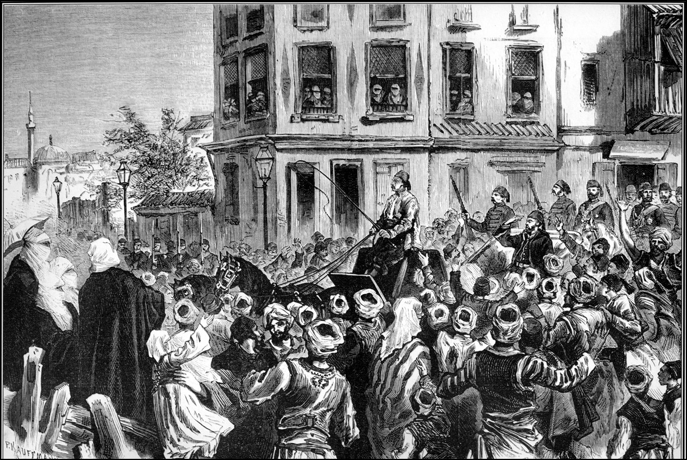
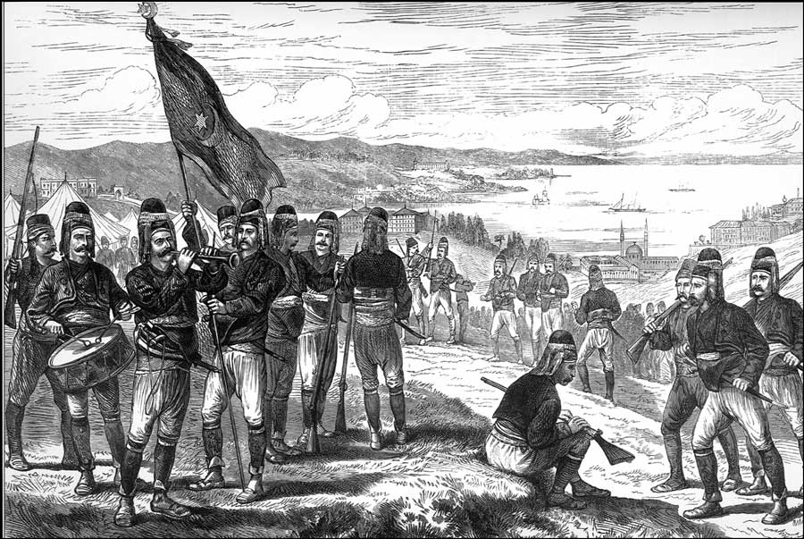
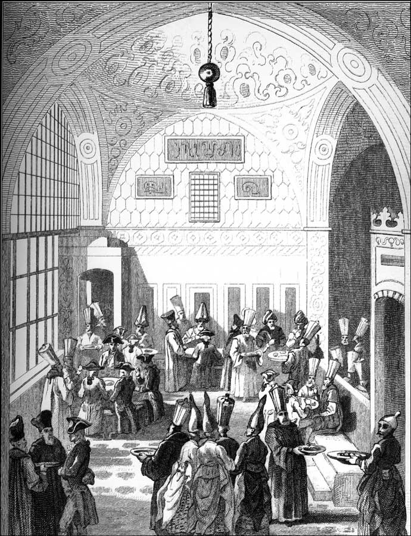

GAZİ OSMAN PAŞA VE PLEVNE SAVUNMASI
Gazi Osman Paşa Plevne’deki muhteşem savunmasıyla dünya askerî tarihinde yerini almıştır. Uzun yıllar seraskerlik (genelkurmay başkanlığı) ve padişah başyaverliği yaptıktan sonra asrın sonunda vefat etmiştir. Çocukları II.. Abdülhamid Han’ın çocuklarıyla evlendirilmiştir. Bu evliliklerden doğan çocuklar kısmen yurt dışında yaşamışlardır.
Benim çocukluğumda Gazi Osman Paşa’nın adını ünlü bir bulvara veya ana caddeye vermek kimsenin aklına gelmezdi. Mamafih, Rumeli Türklüğünün yaşattığı Osman Paşa türküsünü bazı okullarda öğrencilere öğretirlerdi. 28 Nisan 1960 tarihinde İstanbul ve Ankara’daki öğrenci kitleleri bu türkünün bestesini kullanarak meydanlarda bir şarkı söyledi: “Olur mu böyle olur mu, kardeş kardeşi vurur mu?”
Dolayısıyla Gazi Osman Paşa, 27 Mayıs hareketinden sonra birdenbire gündeme geldi; Ankara’da milletvekillerinin oturduğu 14 Mayıs Evleri, İstanbul’da DP’yi en çok tutan semt Taşlıtarla’nın adı Gaziosmanpaşa’ya çevrildi. Tarihin bu cilvesi ile 1877 savaşının en iyi komutanının adı yaşatıldı. Şimdi ise 1877-78 savaşını Rus ve Türk tarihçileri bir arada tartışıyor, değerlendiriyor; bu bir ilerlemedir.
Gazi Osman Paşa mareşallik (müşirlik) rütbesine çok erken yaşta vasıl olmuştur. İtalyanların müzisyeni ve mugannisi ne kadar çoksa, Fransızların ne kadar çok yazarı varsa, bizim de o kadar çok mareşalimiz vardır. Ve bu mareşaller dünya çapındadır, tarihe geçmişlerdir. İmparatorluğumuzu kuran ilk dokuz padişahın hepsi askerî literatüre geçmiş büyük mareşallerdir. Fatih 22 yaşında büyük bir kuşatma savaşını kazanan mareşal olmuştur. Kanunî Sultan Süleyman Avrupa tarihinin seyrini değiştiren Mohaç Meydan Muharebesi’ni çok az zayiatla gene çok genç yaşta, henüz 31 yaşında kazanan hükümdardır. Yavuz Sultan Selim Han tahta geç çıkmıştır. Ondan evvel yerel çapta bazı zaferleri vardır, fakat 8 yıllık saltanatında çok mühim zaferler kazanmıştır. Kazandığı zaferlerden birisi Ridaniye’dir ve hepinizin bildiği gibi hiç kimseyi feda etmeden koca orduyu çölden geçirmiştir. Kendisinden tam dört asır sonra Cemal Paşa o çölde evlad-ı vatanı telef etmiştir. Askerlerin çoğu kum gözlüğü takılmadığı için kör olmuş, ordu susuzluktan kırılmıştır. İngiliz siperlerine lüzumsuz hücum emri verilmiştir. Bu, askerlik sanatıyla ilgisi çok az olan bir aceminin komutan olmasından ileri gelmiştir, yoksa Türk ordusu o vasfını kaybetmiş demek değildir. Nitekim o savaşta da çok büyük genç komutanlar çıkmıştır. Bunlardan birisi hanedan azasından Fuad Efendi’dir. Kazandığı büyük zaferden sonra Harp Mecmuası’nın kapağına şehzadenin [Fuad Efendi] resmi konmuş, ama Enver Paşa tarafından kıskançlıktan çıkarttırılmıştır. Biliyorsunuz, Çanakkale Savaşları sırasında aynı şekilde Yarbay Mustafa Kemal Bey de haksızlığa uğramıştır. Mustafa Kemal o sırada albay olmuştu ve aynı şekilde Harp Mecmuası’nın kapağından resmi çıkarttırılmıştır.

Gazi Osman Paşa’nın İstanbul’a dönüşünde tezahüratla karşılanışı.
Filistin Savunması, Medine Savunması, Kafkasya Cephesi, Galiçya Cephesi sayısız başarılar gösteren zabitlerle doludur.
Gazi Osman Paşa cihangir bir milletin komutanlarından birisidir. Plevne Savaşı’nda yenildiğimiz ve başkente kadar ricat etmek zorunda kaldığımız halde görevini en iyi şekilde yerine getirmiştir. Söylemekte yarar var, Türk orduları ricat etmeyi bilmezler, yani düzgün çekilme bizde bozgunla sonuçlanır. Bu eskiden beri âdetimizdir. Ricat etmeyi ilk defa İstiklal Savaşı’nda öğrendik. Ricat hareketi tarihte Roma ordularında çok başarıyla yerine getirilmiştir. Avrupa orduları da uzun zaman ricatı bilmezdi, ancak 18. asırdan sonra öğrenmişlerdir. Öğrenemediklerinin bir göstergesi Napoléon’un Moskova seferidir. İkinci Cihan Harbi’nde de aynı şekilde Alman orduları ricat etmeyi bilememişlerdir.

1877-78 Osmanlı-Rus Savaşı sırasında İstanbul’da bulunan Zeybek kampı.
Gazi Osman Paşa’nın savunmada kaldığı Plevne Savaşı’nın öyküsü Türkçeye “Tuna Nehri Akmam” diye çevrilmiştir. Zamanın çağdaş harp muhabirleri olan Archibald Forbes ve Mac Gahan adındaki iki savaş muhabiri tarafından kaleme alınmıştır. Burada bütün halkın, zabitanın kahramanca savunmasından bahsedilmektedir. Gerçekten sokak sokak göğüs göğüse çarpışılmıştır. Ordumuzun karşısındaki Rus ordularının sayıca kalabalık olduklarını, cengâverlik konusunda hiç de öyle yabana atılacak bir ordu sayılamayacağını da unutmamak gerekir. Her türlü meşakkate dayanmakta bizim askerlerden geri kalmazlar ve çarpışırlar hakikaten. Bizde ne kadar komutan şehit olmuşsa onlarda da olmuştur.
Osmanlı-Rus Savaşı iki cephede sürer: Tuna cephesi ve Şark’ta Kars-Erzurum cephesi. Her iki cephede de beş altı Rus generali düşmüştür. Gerçi Rus ordusunda ihtikâr ve hırsızlık daha fazladır. Askerin bakımı fevkalade kötüdür. Nitekim zafer kazandıkları halde Yeşilköy’e, o zamanki adıyla Ayastefanos’a geldiklerinde bulaşıcı hastalık, tifüs ve koleradan ordu kırılmaktadır. Bunda kötü beslenme şartlarının, cephane ve iaşenin yeterli olmamasının, konaklama şartlarının iyi hazırlanmamasının büyük rolü vardır. Ordumuzun piyade sınıfı muhteşem silahlarla donanmıştır. En son mavzerler kullanılmaktadır. Aynı donanımın Rus ordusunda bulunmadığı söylenir. Fakat buna karşılık topçu sınıfımız askerî donanım bakımından onlar kadar iyi değildir. Bununla birlikte topçularımız kabiliyetli ve bilgili subaylar olarak kendilerini göstermişlerdir. Reformdan sonra Osmanlı ordusunda Erkân-ı Harb, yani Kurmay Mektebi’nin, Avrupa orduları kadar büyük bir çabuklukla kurulmasından dolayıdır ki kuvvetli Erkân-ı Harp sınıfı ve zabitan yetişmiştir. Ve bunların ne kadar başarılı olduğunu Kırım Savaşı’nda, fakat bilhassa Osmanlı-Türk Rus Harbi’nde görmek mümkün olmaktadır. Rus komutanların arasında ise Alman asıllı General Todleben gibi parlak askerî mühendisler vardı. (“Tod” ölüm, “Leben” hayat demek. Ölüm-hayat diye bir soyadı var generalin.) General Todleben döşediği istihkâmlar ve yarattığı askerî teknolojik harikalarla savunma saflarımıza oldukça büyük zayiat verdirtmiştir. Osman Paşa’nın yaptığı yarma harekâtında da bunun büyük faydasını görmüştür Ruslar.
Dikkat edilmesi gereken ikinci bir nokta, bazıları “Yahudi casuslar şu şu olayı Çara bildirdiler” diyor. Çar’ın kurduğu Yahudilerden müteşekkil bir casus grubu yoktur. Böyle bir şey yok. Ne var ki, Plevne’de yaşayan Doğu Avrupalı bir Yahudi ahlakının düşüklüğünden ve paraya düşkünlüğünden dolayı yarma harekâtı hakkında karşı tarafa bilgi vermiştir.
Dünyada iki cins ordu vardır: Biri, askerî disiplin ve ananeye, haysiyete şiddetle sahiptir. Bunlar centilmence, cengâverce, şövalye gibi savaşırlar. Muharebe ilerledikten hele teslim olunduktan sonra, yağma, ırza geçme, öldürme gibi vakalardan kaçınmaya gayret ederler. Bu zümreden olan Alman orduları maalesef İkinci Cihan Harbi’nde bu haysiyeti koruyamamış; katliam ve jenosit denen olaya karışmışlardır. Bizim ordumuzun tarihinde ise böyle bir vaka yoktur. Ermeni Sorunu konusunda da bunu lütfen zihnimizin bir yerine kaydedelim. İkinci tip ordular, milletin ve devletin askerî bürokratik ananesi olmadığı için yağmacı ve gaddar ordulardır; maalesef Balkan orduları böyledir. Balkan Savaşları boyunca Bulgar ordularının ve hassaten Yunan ordularının yaptıkları katliamın haddi hesabı yoktur. Selanik’e girdiklerinde, Müslüman mahallelerden önce kalabalık nüfusu meydana getiren Yahudi mahallelere saldırıp orada katliama girişmişlerdir. Çünkü amaçları etnik temizlik yapıp Selanik’i Hellenleştirmek yani Yunanlaştırmaktır. Bulgar orduları 93 savaşında ve Balkan Savaşı’nda maalesef askere yakışır bir haysiyet gösterememişlerdir. Edirne’yi işgal ettikleri vakit onurlu bir işgalci kuvvet rolünü oynayamamışlardır.
1293 yani 1877-78 savaşı bir imparatorluğun yıkılmasından çok, Rumeli’deki anavatan topraklarının erimeye başladığının ilk büyük tezahürüdür. Bundan sonra, Jöntürklerin basiretsiz politikalarının sebep olduğu Balkan Savaşı faciası yaşanmış, o savaşta bugünkü Türkiye’nin daha uzun yıllar tamir edemeyeceği gedikler açılmıştır. Vatanımızın en verimli, en eski kesimi elden çıkmıştır. Elden çıkan bazı Rumeli vilayetleri Doğu Anadolu’dakilerden daha uzun bir süredir Osmanlı vatanının parçasıydı ve Türklerle meskûndu. Bu unutulmaması gereken bir faciadır. Maalesef bunlar Türk çocuklara etraflı şekilde anlatılmamaktadır. Kimse tarihçilerden yalan yazmasını, hamaset yapıp da uyduruk şeyler çıkarmasını istemez. Doğruları yazmaları, doğruları soğukkanlı biçimde anlatmaları yeterlidir. Tarihini doğru aktarmayan, yazmayan bir millet olmaz, bir millet düşününüz ki adeta ruh hastası bir adam gibi yakın tarihini hafızasından çıkartmaya çalışıyor. Hastalar kendine gelsin diye elektro şokla zihninden bazı vakaları silerler. Bunu toplum hayatında tatbik etmeniz mümkün değildir. Onun için Balkan Savaşlarını çok iyi bilmemiz ve anlatmamız gerekmektedir.
Gazi Osman Paşa, Midhat Paşa’nın valiliği sırasında Türkleştirmekte, İslamlaştırmakta büyük rolü oynadığı bir memleketi savunmuştur. Payitahtta iyi bir devlet adamı olamayan, başarılı bir sadrazamlık yapamayan Midhat Paşa, Tuna vilayetinde o ülkenin Rusya ve Kafkasya’dan Türk ve Müslümanlarla iskân edilmesini, oranın Türkleştirilmesini, coğrafyaya Osmanlı damgasının vurulmasını sağlamıştır. Bunu takdir etmek zorundayız ve Bulgaristan Türklüğünün ayakta kalabilmek için uzun zaman tutunduğu manevi desteklerden birinin büyük vali Midhat Paşa’nın hatırası olduğunu biliyoruz. Hiç şüphesiz ikinci destek de tabii ki o vatanı savunan, savunurken şehit olmasına ramak kalan Gazi Osman Paşa’dır. Bu iki isim Rumeli Türklerinin hafızasında Rumeli’yi fetheden büyük padişah ve kumandanlar kadar unutulmaz izler bırakmıştır. Gazi Osman Paşa merkezde Midhat Paşa’yı sevmemiş, işin aslı, monarşi denen müesseselerin askerî darbe ile yıpratılmasına karşı çıkmıştır. Bu çok önemli bir yaklaşımdır büyük bir asker söylemektedir, bunun üzerinde de durulması gerekir.
Gazi Osman Paşa yerli ve yabancı bütün komutanların saygısını kazanmış birisidir. Ve şunu da tebarüz ettireyim Sultan Abdülhamit dönemi boyunca biz Alman ittifakına girmiştik, fakat Gazi Osman Paşa’nın bu devin, sonra ki meşrutiyet döneminde ittihatçılara göre büyük bir farkı vardır. Gazi Osman Paşa ve karargahı Almanları sadece gösterişte kullanırlardı; dış dünyaya yani İngiltere ve Rusya’ya karşı “Almanya bizim müttefikimiz” demek için. Yoksa ordunun saflarının, silah mübayasının, Genelkurmay’daki planların, stratejik kararların dışında bırakılmıştır Alman askeri heyetler. Bunda Gazi Osman Paşa’nın çok büyük payı vardır.
Hatta Sultan Abdülhamit hatıratında diyor ki; “Bu Avrupa’da bilhassa Almanya’da tahsil gören genç subaylarımız böyle bir gurura kapılmışlar halbuki bunların hiç birisi bizim eski komutanların mesela Gazi Osman Paşa’nın ayarında değiller” diyor. Hakikaten yerli ve yabancı kim olursa olsun devlet hayatımızda bu insanların çok büyük rolü ve yeri olduğu açıktır. Bu hükmün üzerinde durmak icap eder.
DÜVEL-İ MUAZZAMA VE OSMANLI
Genellikle bizim siyaset ve tarih edebiyatımızda bu terim çok yanlış kullanılır. “The Great Power”i, “Puissances etrangères”i veya büyük devletleri ifade eden, 19. asırda ve 20. asır başında Birinci Cihan Savaşı’na kadar kullanılan bir terimdir bu; Düvel-i Muazzama. Bu Düvel-i Muazzama öyle takdim edilir ki belirgin devletler, İngiltere, Fransa, sonra Almanya, sonra Rusya, Avusturya-Macaristan; bunlar dünya siyasetini yürütmektedirler. Osmanlı Devleti ise, geri kalmış, küçülmekte olan bir imparatorluk olarak bunların arzularına tabidir, hukukî bakımdan da bunlarla hiçbir eşitliği yoktur. Bu terimin ne derece yanlış kullanıldığını görmek için, milletler ailesini, milletler manzarasını çizmekte fayda vardır.
19. asrın sonunda bilhassa Birleşik Devletler, Amerika Birleşik Devletleri, sanayii büyüyen, tarımı ve zengin maden kaynaklarıyla zenginleşen bir kıta olduğu için statüsü değişmektedir. Çin-Japon Savaşı’ndan sonra Japonya’nın kuvvetlendiği ve özellikle de 1905 Savaşı’yla Rusya’yı, hem de donanmalarını mahvederek feci halde yendikten sonra Asya’da durumun çok değiştiği ve Japonya’nın da büyük devletler arasına girdiği açıktır.
Fransa ile Almanya arasındaki Sedan Muharebesi’nde Alman askerî kuvvetleri üstünlüklerini ispat etmiş ve 1871 Versailles Antlaşması’nda Almanya birleşip bir imparatorluk olarak ilan edilmiştir; yani zaferlerinin tasvip edildiği bu anlaşma dolayısıyla büyük Alman Reich’ı ortaya çıkmıştır ve Almanya’nın artık büyük devletlerin arasına girmesi söz konusudur. Nitekim ondan evvel bir Prusya vardı, birçok yerde Bavyera’nın elçilikleri vardı, hatta Palatina, Würtemberg Dükalığı gibi devletçikler vardı. Bunların hükmü artık bitmiştir, Almanya bir imparatorluktur.
Napoléon’un Roma-Germen İmparatorluğu’nu dağıtmasından beri Avusturya zaten bir ayrı imparatorluk olmuştur ve hatta İmparator II. Franz’ın bu yüzden Avusturya İmparatoru olarak I. Franz unvanını aldığı malumdur. 1867’de de Avusturya bünyesindeki Macaristan’la bir eşitlik antlaşması içerisinde ayrılmış; Avusturya ve Macaristan olmuştur. Avusturya İmparatorluğu ve artı olarak Macar Krallığı’na aşağıda sayacağım ayrı ülkeler bağlıdır ve yapılanmaları çok değişiktir.
Böyle bir ortam içerisinde Osmanlı İmparatorluğu’nun tarih boyunca ‘orta elçi’ seviyesinde temsil edildiği İspanya da aslında büyük devletlerdendir. Osmanlı, hiçbir zaman onu büyük devlet olarak tanımamıştır. Onlar da Türkiye’yi tanımamıştır. Nitekim Prusya’yla da büyükelçilik düzeyinde birbirimizi tanımamız Berlin muahedesinden sonra söz konusu olan bir olaydır.
Ondan evvelkiler, burada elçi rütbesiyle bulunurdu; mesela ünlü Rusya Büyükelçisi dediğimiz İgnatiev aslında elçi rütbeli bir görevliydi. Tabii şüphesiz ki çok etkiliydi, nitekim Versailles’dan evvelki birleşmemiş Almanya adına burada sadece Prusya elçisi vardı. Prusya Elçisi de elçi olmasına rağmen sözü geçen biriydi.
Büyük devletlerin özelliği şudur: Büyük devletler, büyükelçi teati ederler. Bugün herkesin büyükelçisi var. En küçük Güney Amerika ülkesinin, Okyanusya’daki 25 bin, 100 bin, 50 bin nüfuslu Papua-Yeni Gine gibi birtakım devletlerin bile büyükelçileri var.
İkinci Cihan Harbi’nden sonra bir ara birbirini yarı yarıya tanıyan memleketler, delegasyon, delege ve elçi seviyesindeydiler. Mesela İsrail’le bizim bağlantımız, onları tanımamıza rağmen böyleydi. Bulgaristan Halk Cumhuriyeti’yle olan bağlantımız da böyleydi. Bu ilişkiler de kısa zamanda, bilhassa 1960’ların artık birlikte var olma, barış içinde geçinmeyi farz sayan devletler ailesinde gelişti. Eskiden büyükelçi statüsündeki memurların çok değişik konumu vardı, bayağı politika tayin ederlerdi.
Bu, Hariciye Nezareti’nin genel olarak yazdığı bir memoranduma, bir enstrüksiyona tabi olarak yapılırdı. Mesela Colbert, XIV. Louis’nin nazırı olarak büyükelçilere bir talimat vermiştir. O talimatın içinde ambassadorlar, büyükelçiler, fevkalade yetkilerle politikayı tayin ederler. Aynı şekilde İngiltere, Fransa ve diğerleri. Bu hareket serbestisi içinde bunların notalarla bazı şeyleri protesto etme, bazı konularda ani müdahalede bulunma gibi hakları vardı, yaparlardı.
Birtakım işlere birkaç büyükelçi bir araya gelerek müdahale edebilirdi. Bunu, bilhassa Osmanlı başkentinde yapmışlardır. Rusya’da da yaparlardı, İngiltere’de ve Fransa’da da olmaması için bir neden yoktu. Nitekim bir başkentteki büyükelçilerin kademe kademe bir araya gelerek bazı konularda ortak bir layihayla, o devletin Hariciye Nazırı’na müracaat ettikleri vakidir; bu gibi şiddetli bir protesto veya bir ortak talebe rastlanabilir. Tabii ki büyükelçilerin arasında bugünkü anlamda bir teşkilatlanma söz konusu değildi.
Orta elçi durumundaki insanlar –küçük devletlerin elçileri böyledir– hiçbir zaman protokolde öbürkülerin önüne geçemezler, onlarla eşit değildirler. Bazı konularda büyükelçilerin toplanıp aldıkları kararlar bunlara tebliğ edilirdi, bunlar toplantılara katılmazdı. Mesela Osmanlı başkentinde İngiltere, Fransa, Avusturya-Macaristan, sonraları Almanya ve daha sonra İtalya gibi devletlerin bu sefirleri bir araya gelip bazı konuları konuşurken ne Belçika’nın ne Romanya’nın ne Yunanistan’ın, hatta ne Hollanda’nın, ne Danimarka’nın, ne İsveç’in, ne Norveç’in elçilerinin bu kararlara, bu toplantılara katılması söz konusudur; ama sonuç onlara tebliğ edilirdi.
Nitekim Osmanlı Balkanları’ndaki ayaklanma yılında, 1875’te, Haliç’te toplanan Büyükelçiler Konferansı’nda bu devletlerin hiçbirinin yeri yoktu. Hatta bunlardan bazıları bu işle ilgili olduklarını iddia etseler bile ancak alınan kararlar onlara tebliğ edilirdi. Burada çok ilginç bir biçimde bazı ahvalde büyükelçi olmasa bile bazı büyük devletlerin elçilik temsilcilerinin de bu toplantılara alındıklarını görürüz. Kimdi bunlar? Bizim devletimizin nezdindeki büyükelçiler hiç şüphesiz en başta Büyük Britanya’dır, ondan sonra Fransa’dır, ondan sonra Avusturya-Macaristan’dır, Prusya-Alman İmparatorluğu’nda, hiç şüphesiz Versailles’dan sonra Almanya’dır, sonra İtalya’dır ve Rusya’dır ve bu büyük devletler nezdinde de bizim de aynı şekilde büyük devlet olarak büyükelçimiz vardı; yani Osmanlı da Düvel-i Muazzama’dan biriydi. Şüphesiz ki 19. asırda Düvel-i Muazzama’nın devletlerinin her biri aynı derecede büyük değildi.
İngiltere büyüktü. Yeryüzünde çok geniş sömürgeleri ve kalabalık nüfusu olan bir devletti. İktisadî vaziyeti fevkaladeydi. Öncü bir sınaî devletti, ticarî devletti, bahrî devletti. Bürokrasisinin işleyişi çok mükemmeldi. Bunu, arşivlere girdiğiniz zaman tutulan kayıt ve raporlardan görüyorsunuz. Dünyanın bazı bölgeleri daha mütehassıs ellerde yönetilirdi; mesela Hindistan İmparatorluğu bir kral naibliğiydi, tacın bir parçasıydı ve burada bir India Office vardı ve meselâ İran’a büyükelçi buradan tayin edilirdi. Büyükelçi İstanbul’a Londra’dan gelir, ama Tahran’ın Basra, Bağdat gibi bazı yerlerin elçi ve konsolosları Delhi’den tayin edilirdi. Bunlar mesela Farsça bilirlerdi; çok ehil büyükelçiler ve diplomatlardı ve etkiliydiler. Raporları da son derece okunmaya değer; tarihçiler bunları okumayı sever.
Bazı büyük devletlerin de inanılmaz bir ağı vardı. Mesela Rusya Osmanlı İmparatorluğu’nda böyleydi. Balkanlar’daki ahalinin onda dokuzuyla benzer bir dilleri vardı ve dinleri aynıydı. Yaygın konsolosluk ağları hiç şüphesiz bir enformasyon, bazı halde de bir kışkırtma aracıydı. Bunların karşısında Osmanlı İmparatorluğu’nun durumu neydi?
Bugünkünden çok daha geniş bir konsolosluk ağımız vardı. Mesela Batum’da, Bakü’de, Kırım’da, Odessa’da, St. Petersburg’da vardı. Moskova’da vardı. Kazan’da bugün de var. Orta Asya’da birtakım temsilcilikler vardı. Bunlar siyasete de aktif olarak katılırlardı.
Tıpkı imtiyazlar, yani kapitülasyonlar gibi, Osmanlı Devleti’nin de bu ülkelerde Türk pasaportu taşıyan birtakım tebaası vardı. Bunlar, bugünkü Endonezya’nın parçası olan Cava’da, Hindistan’da, Orta Asya’da, Kafkasya’da yaşarlardı. Ve bu pasaportu taşıyan insanlar buralarda çalışır. Ya tüccardır, ya iş görür, ya büyük çiftçidir veya bir şekilde bir din adamıdır. Bunlara müdahale edildiği vakit Türk konsoloslar, işe karışırlar, tıpkı burada yabancı konsolosların yaptığı gibi. Bu yüzden İngiliz sömürgelerinde ve Rusya vilayetlerinde persona non grata yani istenmeyen şahıs ilan edilip atılan başkonsoloslarımız vardır ama bunun arkası gelmez.
Bunlar mesela bağış bile toplarlardı. Hicaz Demiryolu’nu bu şekilde kurmuşuzdur ama şurası bir gerçektir: Osmanlı İmparatorluğu, her şeye karışan, her şeyi düzenlemeye çalışan bir büyük devlet değildir. Büyük devlet birtakım meselelere müdahale eden, sorgulayan bir devlettir. İngiltere, her istediğini yapıyor mu başlıca devlet olarak o zaman? Hayır. Ama istemediğini de yaptırmazdı.
Bu çok önemli bir ayrımdır. Fransa, istemediği bazı şeylere de göz yummak zorundaydı. Avusturya-Macaristan çok daha derecesizdi. Rusya’nın birtakım taleplerine karşı gene öbür devletler birleşirlerdi. Alman İmparatorluğu, gürültücü bir çocuk gibi geç kalmış olarak bu camiaya girdi ve çıkarttığı sorunların sonu yoktu ama her zaman muvaffak olamazdı. Bu büyük devletler hiyerarşisi, bunların temsil yeteneği çok başkaydı. Mesela 19. asrın üçüncü yarısında, büyük devletler yerli kamuoyunu da birtakım misyonerler aracılığıyla, birtakım gazeteler veya besledikleri gazeteciler aracılığıyla etkilemeye başladılar. Bu tip operasyonları Osmanlı Devleti güderdi. Avrupa’da birtakım gazeteleri veya yazarları satın alır ve ona göre yazdırırdı.
Salih Münir Paşa’nın bu işlerde çok ehil olduğu, hatta belki malî bakımdan kendisinin de bundan istifadesi olduğu bazı tarihçilerimizce söyleniyor, günahı boyunlarına ama bu anlamda Fransız kamuoyundaki –Belçika nezdinde de akredite bir büyükelçiydi bir ara– bir sürü sorunu hallettiği çok açıktır. Ehil bir diplomat ve kamuoyunu yönlendiren biriydi. Diğer ülkelerde de bunu görmek mümkündü.
Mesela Berlin büyükelçimiz, padişahın ve devletin, Bâbıâli’nin aleyhinde yazan bazı gazeteleri kapattırmıştır. Orada iş daha kolaydı. Berlin’de yönetime şikâyet edersin, bunu Alman Devleti’nin kendi yapardı. İslamiyet aleyhindeki bazı çıkışları önledikleri olurdu. Bunlara önem verilirdi. Aynı şeyleri diğer büyük devletler de bizim nezdimizde yapar ve bazen dozu kaçırırlardı.

Divan’da Başvezir ile bir Avrupa elçisinin yemeği. H. Lalaisse.
Hiç şüphesiz ki bu büyük devlet büyükelçilerinin başkent nezdindeki protesto ve notalarının ölçüsü ve usulü birbirine benzemezdi. Osmanlı başkentinde bir ara ölçüyü adamakıllı kaçırmışlardır. O zaman bunu önlemek için bazı mekanizmalar bulunmuştur. II. Abdülhamid zamanında mesela Arap İzzet Paşa, yahut İzzet Halo Paşa başkente gelen diplomatik temsilciler hakkında, onların özel hayatları hakkında dosyalar tutardı. Kumar mı oynuyor, bazı başka ilgileri mi var, bunları tespit ederdi. Mesela çok düzgün bir adamsa da onu yoldan çıkartmaya bakardı. Böylece şantaj dosyası oluştururdu. Hikmet-i Hükümet icabı yapılan şeylerdir. Bununla Fransa’nın politikası veya İngiltere’nin veya Avusturya-Macaristan’ın politikası tamamen bizim lehimize döndürülecek değildir tabii ki. Bazı halde çok yaralayıcı olan üslub, kaba davranış, şiddetli protesto önlenir, ‘Lütfen sesinizi kısın, Ekselans’ demeye getirilirdi. Başkentteki diplomatik temsilcilerle bazı halde devlet adamlarımızın çok yakınlaştığı bir vakıadır. Tanzimat’ın büyük adamları, Âli Paşa ve Fuad Paşa, çok saygı duyulan diplomatlardı. Mustafa Reşit Paşa, hiç şüphesiz büyük bir diplomat ve Avrupa politikasına, bilhassa Kırım Savaşı’nda yön verecek kadar hâkimdi. Concert d’Êurope yani Avrupa Topluluğu dediğimiz büyük kuruluşa 1856 Paris Kongresi’ni imzalayan büyük devletlerin her biri üye olmuştur. Bununla birbirlerinin hayat ve sınırlarını teminat altına almışlardır. Genelde pek faydası olmamıştır, ama bazı noktalar geliştirmeye de yaramıştır.
Bir Avrupa devleti olarak Osmanlı İmparatorluğu, tıpkı diğerleri gibi kapitülasyon haklarına sahipti. Eğer bunu kullanamamışsa, o başka. Nitekim Rusya da aynı şeyi çok iyi kullanamamıştır. Avusturya-Macaristan dışında belki İtalya da o kadar aktif olamamıştır ama olmaları için hiçbir mani yoktur. Şimdi bu büyük devletlerin arenadaki etkilerini tayin eden iktisadî hayatlarına bakalım. Dedik ki, Amerika Birleşik Devletleri nüfusu itibariyle, kaynakları ve sanayi itibariyle kalkınıyor. Belki de Avrupa devletlerinin çok önünde gidiyor. Gidiyor ama aynı zamanda da kıtanın işlerine karışmıyor. Mesela Osmanlı İmparatorluğu, Amerika ile büyük devlet olarak, büyükelçi teati etmek için ısrar ediyor, hiç oralı değiller.
Amerika, Birinci Cihan Harbi ortasına kadar öyle kaldı. Ancak harbin ortasında Henry Morgenthau orta elçiyken rütbesi büyükelçiliğe çıktı ve biz de o şekilde ilişkiyi yükselttik. Amerika Avrupa’daki başka büyük devletlerle, Britanya’yla mutlaka çok daha önceden büyükelçi teatisine girmiştir ama genelde bu devletin bazı konularda müdahalesizliği söz konusudur.
Osmanlı İmparatorluğu’na siyasi müdahale bakımından Amerika Birleşik Devletleri o kadar aktif görülmüyordu. Kim aktifti? Onun adına İngiltere. Mesela Amerikalı Misyonerler okulu açıyor, yerli makamlar ve hatta yerli kiliselerle problemleri oluyor; çünkü bu Protestanlar. Ermeni patriki şikâyet ediyor, ‘cemaatimizi etkiliyorlar’ diye. Bu misyonerlerin hakkını, hukukunu, ABD temsilciliğinden çok mahalli Britanya konsolosları korurdu. Birtakım gayrimüslim milletlerin hukukuyla da Fransa, Rusya, nadiren de Avusturya ilgilenirdi. 19. yüzyılda Almanya daha aktif olmaya başladı ve Osmanlı İmparatorluğu da bunu hayırhah bir şekilde karşıladı. Bizim nezdimizde çok eskiden beri sefareti olan İran makbul bir memleketti. 16. asırdan beri en şaşaalı sefaret heyetleri Avusturya’dan ve İran’dan gelirdi ve İstanbul’un Müslüman kesimindeki tek sefaret İran’dı. Orada da bayrak çekme bir ara problem olmuştu. Ama İran, büyük devletler arasında sayılmıyordu.
19. YÜZYIL DÜNYASI VE OSMANLI
19. yüzyılın son çeyreğinde Avrupa’da savaş rüzgârları esmeye başlamıştır. Büyük devletler arasında ittifak antlaşmaları, karşılıklı ziyaretler devam etmektedir. III. Alexander’in, Paris’i ziyaretinde bir köprüye adı verilir. Fransa ve Rusya’nın yakınlaşması aslında, Almanya ve Rusya arasındaki yakınlaşmanın gerçekleşmemesindendir. Sebepleri gayet açıktır. Rusya’da sanayici, modern çiftçi ve maliyeci çevreler Almanya’ya karşı bir sempati duyarlar. Bu onların eğitimdeki Alman etkisi ve Büyük Katerina’dan beri Rusya topraklarına yerleştirilen Alman çiftçilerin yarattığı yeni bir zirai modernleşme dolayısıyladır. Ünlü çiftçilerin hepsi çocuklarını Alman Gimnasium’una gönderir ve bu gibi çevrelerde Almanca konuşulan dildendir. Dolayısıyla ilk anda Alman-Rus yakınlaşması, Rusya’ya Alman teknolojisi gelecek, Osmanlı’nın birtakım hammadde zenginlikleri oraya akacak, karşılığında Rusya zenginleşecek, teknik güç elde edecek, sanayi büyüyecek, işçi sınıfı güçlenecek, köylülük gittikçe zayıflayacak gibi düşüncelere neden olmuştu.
Alman-Avusturya yakınlaşmasının başlaması, Rusya’yla Almanya’nın arasındaki gerilim Rusya’yı Fransa bloğuna itmiştir ve İngiltere de zaten Fransa’nın tabii müttefiki olarak kıtadaki büyük devletlerin karşısındadır. Böyle bir ortamda bilhassa Osmanlı-Rus Savaşı’ndan sonra II. Abdülhamid yönetimi, Almanya’yı yanında göstermekten adeta bir hayal perdesi gibi istifade etmektedir.
Böyle bir ortamda özellikle 1877-78 Osmanlı-Rus Savaşı ve Berlin Kongresi’nden sonra, Osmanlı İmparatorluğu, bu harp boyunca beklediği müzahereti göremediği İngiltere ve Fransa’ya sığınamayacağı için, ayrıca liberalleri anti-Türk bir politika güttükleri için, ister istemez Almanya’ya yanaşmıştır. Şu tarihi hakikate işaret edelim: II. Abdülhamid’in Alman taraftarlığı ve dostluğu, kendisinden sonraki ittihatçılarla, Jön Türklerle mukayese edilmeyecek kadar sathidir.
Gerçek bir Alman hayranlığı ve dostluğu II. Meşrutiyet’ten sonrası hükümetler devrinde özellikle İttihat ve Terakki ile başlar. II. Abdülhamid Alman eğitmenlerin ve müşavirlerin orduda gerçek anlamda hakim olmalarına pek taraftar değildir. Daha ziyade Alman silahlarını almakta, bunu İngiliz, Amerikan silahlarına karşı bir rekabet unsuru olarak, bir kışkırtma unsuru olarak düşünmekte ve Almanları yanına çekmenin Batı bloğuna, Rusya’ya karşı bir gösteriş, bir hayal perdesi olduğunu düşlemektedir. Her halükarda, bir yandan da Rusya’yla Osmanlı İmparatorluğu arasında gizli bir barış söz konusudur. III. Alexander otokrat biridir ama barışın Rusya için gerekli olduğunu anlamıştır. Osmanlı İmparatorluğu ile çatışmanın da Rusya’ya pek bir kar getirmediğini ve bu savaşın, Plevne Savaşı’nda olduğu gibi çok pahalıya mal olduğunu görmüştür. Rusya’ya sanayileşme lazımdır, münakalat [ulaştırma] lazımdır, nitekim Trans-Sibirya Demiryolu’nu o, başlatmıştır. Rusya’ya okul lazımdır. Aynı şeyler II. Abdülhamid için de doğrudur. Osmanlı İmparatorluğu’na yol lazımdır, fabrikalaştırma lazımdır, ziraatın geliştirilmesi lazımdır ve okul lazımdır. İtiraf etmek gerekir ki Osmanlı İmparatorluğu, bilhassa bu son kalemde, II. Abdülhamid’in padişahlığı boyunca önemli bir gelişme sağlamıştır.
Şimdi büyük devletlerin iç durumuna bakalım. İngiltere, Afrika’nın güneyini ve bu kıtanın en verimli bölgelerini kontrol altında tutmaktadır. Ayrıca Avustralya da var. Oradan Çin üzerinde büyük devletlerle olan kontrol ve tabii hiçbir şekilde unutamayız, ‘Indian Subcontinent’ denen bugünkü Pakistan, Bangladeş ve Hindistan’ı içeren büyük kıta. Yeryüzünün en kalabalık, en verimli bölgelerinden biri...
Hindistan, Britanya Tacı’nın en önemli parçasıdır ve Victoria, Birleşik Krallığın, Britanya’nın Kraliçesi ve Hindistan İmparatoriçesi olarak taç giymiştir. Hindistan, bizim zannettiğimizin aksine, kuru bir sömürge olmanın ötesinde kara talihine rağmen, İngiltere’yi etkilemiştir. O kıtanın eski kültürü, egemen sınıflarının, okumuşlarının tavrı, İngilizleri derinden etkilemiştir. Ayrıca, Hindistan’ın yetişmişleri de İngiliz İmparatorluğu’nun bu anlamda kültürel kaynağını yemekte gecikmemiştir. İlerinin; yani bugünün Hindistan’ının atılımında bunun çok büyük payı vardır.
Hiç şüphesiz ki bu kıtanın insafsızca sömürülmesi İngiliz İmparatorluğu’nun işine gelir. İngilizlerin sömürgeleri saymakla bitmez: Antiller. Oradan geçelim, Okyanusya’daki birtakım takım adalar. Bütün bu güneş batmayan büyük imparatorluğun, maalesef İngiltere’ye gerekli bir şekilde yansıdığını söylemek zordur. İngiliz halkı, 19. asrın ortasında Victoria’nın en sevgili ve kıymetli Başbakanı Benjamin Disraeli’nin deyişiyle iki milletten oluşur. Disraeli der ki; ‘Kraliçe Victoria, iki milletin başındadır; fakir ve zenginlerin.’ Ne gariptir ki, bu muhafazakâr hükümet birtakım sosyal reformlara başlamıştır. İngiltere’nin asıl başarısı, Disraeli’nin, bir Fransız projesi olan Süveyş Kanalı’nı ani ve akıllıca bir iktisadi kararla ele geçirmesidir.
Bazı tarihçiler, Süveyş’te Osmanlı İmparatorluğu’nun elendiğini söylüyorlar. Biz, zaten o projenin başından beri içinde değildik. Ama asıl önemlisi, o projeyi tahakkuk ettiren Fransız mühendisliği ve Fransa elenmiştir. Böylelikle İngiltere, denizlerin kontrolünü elinde tutmaktadır. Berlin Kongresi’nden sonra en önemli bir Akdeniz Üssü olan Kıbrıs’ı da kontrol altına aldığını düşünürsek…
Mısır, Hindistan, Afrika’nın en verimli bölgeleridir. Britanya dünyaya hakimdir ve tartışılmaz bir şekilde 19. yüzyılın son çeyreğinde cihan devletidir ve bu adını hiç şüphesiz Napolyon Savaşları’ndan beri elde etmiş ve sürdürmektedir. Fransa, ancak İngiltere’nin pek tenezzül bulunmadığı sömürgelerinin üzerindedir.
Buna rağmen 19. yüzyılın son çeyreğinde Fransa, parlak bir ülkedir. Yeni konan Nobel ödüllerini 20. yüzyılda büyük ölçüde Fransızlar almaktadır ve Mısırlı aydınlardan Rifaa Rafi el-Tahtavi’nin belirttiği gibi Fransa bilimlerin ve bilhassa tıbbın babasıdır. Tıp bilimi ve hasta bakımı Fransa kadar hiçbir yerde mükemmel değildir. 19. yüzyılın son çeyreğinde Fransa kendi fakirliği, kendi adaleti yanında, kendi zenginleşmesi, kendi zarafeti ve zirveye ulaşmış üniversal kültürüyle Avrupa’nın en gözde ülkesidir. Belki İngilizce kadar, hatta belki İspanyolca kadar bile yaygın değildir; ama Fransızca bilmek, Fransızca okumak ve konuşmak bütün dünya okumuşlarının üniversal bir ortak noktasıdır.
Bu ülkenin sömürgeleri Britanya’nınkine göre çok geridir, çok fakirdir; fakat Fransa her istediğini yaptıramaz, İngiltere de yaptıramaz ama Fransa’nın istemediği bazı şeyler de yapılır. Galiba bu ikisinin arasındaki fark bundan ibarettir. Hiç şüphesiz ki İngiltere, öncü bir sanayi devletidir ve 19. yüzyılın sonunda milyonluk şehirler Britanya Kıtası’nda, Britanya Adaları’nda birbiri ardından çıkmaktadır.
Londra’nın yanında Manchester, onun yanında Birmingham, onun yanında York, sanayi merkezleri olarak birbirini izlemektedir ve gittikçe Britanya’nın kırsal kesimleri kaybettiği nüfusla köylü nüfusun adeta %15’lere düştüğü görülmektedir. Oysa Fransa, bırakın Birinci Dünya Savaşı’nı, İkinci Dünya Savaşı’na girdiği zaman bile %50’si köylü olan bir memlekettir ve köylülerin yaşadığı ağır şartlar adeta Paris’in ışıltısıyla, parlaklığıyla büyük bir kontrast teşkil etmekteydi. Belki de bu kontrast, Fransız Cemiyeti’ne bir yenilik, bir çekicilik veriyordu ama arzu edilen de oydu ki Avrupa’da Fransa artık rolünü kaybetmekteydi.
Yeni doğan Alman İmparatorluğu, Versailles’dan sonra, hızlı bir şekilde sanayileşmekteydi. Daha evvel Prusya Krallığı, demiryolu ve kanallar ağıyla Almanya’yı Baltık ve Akdeniz arasında adeta bağlamaya muvaffak olmuştur ve şurası açıktır ki Almanya, Avusturya’nın iktisadi bakımdan üstündeydi ve Avusturya Almanya’ya entegre olmaya başlamaktaydı. Bu süreç 20. yüzyıla kadar devam edecektir ve bugün Almanya ve Avusturya bir iktisadi, kültürel bütünlük içindedir.
Yeni doğan Almanya, Prusya’nın tarihteki rolünü devam ettirmekte, Rusya’nın Batı eyaletlerine; yani Polonya’daki Lodz şehri gibi dokuma merkezlerine, Macaristan’a, hatta Romanya’daki yeni doğan petrol endüstrisine, tekstile, dokumacılığa el atmaktadır. Alman kültürü, birçok yeri istila etmiştir. Buralarda, çok yerde Fransızca’dan çok Almanca bilindiği yerli dillerin arkasından, Almaca konuşulduğu, Almanca’nın bir beynelmilel lingua franca, bir entelektüel dili olduğu gerçektir. Dahası, çok iyi bilinen, İngiliz Bankacılığını yenen bir Alman Bankacılık teşekkül etmektedir. Bu çok aktif bir bankacılıktır. Sadece kredi vererek yaşamıyor, icabında birtakım çürük ve cılız sanayi destekliyor ve sanayiye ortak oluyor ve yeni yatırımları teşvik ediyor.
Doğu Avrupa’ya ve hatta Osmanlı İmparatorluğu üzerinden Mezopotamya’ya yayılan Alman nüfuzu, kendisini “dört D”’ye muhtaç hissetmektedir. Deutsche Bank, Dresdner Bank, Damstetter Bank ve Deutschland Bank. Bu dört D dolayısıyla, Almanya, kendisini buralarda sağlam hissetmektedir.
Bu bankalar etraf hakkında o kadar iyi bilgi toplamaktadır ki basık sermayeyi, tahsil edilemez alacakları ile birlikte toplayabilmektedirler. Alman demiryolu teknikleri bakımından üstündür. Her halükarda, bilhassa Orta Doğu’da ve Osmanlı İmparatorluğu’nda Fransız Demiryolculuğu, ipin ucunu bırakmamıştır ama çoktan beri İngilizler, bu yarışın gerisinde kalmağa başlamaktadır.
Büyük bir süratle İstanbul’dan başlayan demiryolları, Ankara’ya, Konya’ya, daha önce demiryolları görmemiş yerlere ulaşmakta ve çok kısa bir sürede Mezopotamya’ya dayanmaktadır. Öyle ki I. Dünya Savaşı’nın çıkışı biraz gecikse Bağdat’a da ulaşabileceklerdi. İşte burada İngiltere İmparatorluğu yani Britanya İmparatorluğu ve Almanya sıcak bir çatışmanın içine girmektedir. Büyük devletlerin sözde önde gelenlerinden kültürel yapısıyla Orta Avrupa’yı çok etkileyen Avusturya-Macaristan’a gelince; bilhassa 1860’taki ikiye ayrılmadan ve eşitlik kontratından sonra Macaristan bir ayrı hükümet ve parlamento, Avusturya İmparatorluğu bir ayrı hükümet ve parlamento. Müşterek olan sadece İmparator François Joseph yönetimindeki Habsburglar. Ondan Avusturyalılar, ‘Kayzer İmparatorumuz’, Macarlar ısrarla ‘Kral’ diye bahsediyorlar.
Onlar için o, imparator değil; Macar Kralı. Bürokraside memurlar birbirine giriyorlar. Bütün eyaletler Avusturya ve Macaristan arasında bölüşülmüştür. Sadece 1878 Berlin’de işgal edilen, dikkat edin, henüz ilhak edilmeyen Bosna Hersek, iki tarafın ortak idaresi altındadır ve burada Macar ve Avusturya kökenli Normanlar birbirleriyle gayet gerilimli ilişkiler içindedirler. Bir yandan da sanayi, burjuvası ve entelektüelleriyle gelişen bir Çekya vardır. Bugünkü Çekya; yani Bohemya, o kadar büyük kalkınma göstermektedir ki Avusturyalılara adeta tepeden bakacak bir Çek burjuvazi ortaya çıkmıştır. Diğer taht ülkeleri, taç ülkeleri bu imparatorlukta, yılda %1 ila 2 oranında gelişme gösterirken, Macaristan gibi bir kısım birden bire tarihi tarımsal yapısını yıkmış ve yılda %6’ya ulaşan bir gelişme göstermektedir. Şehirler o kadar büyük bir tekâmül içindedir ki binalar birbirini izlemektedir. Hatta bizim çocukluğumuzda okuduğumuz Ferenc Molnar’ın ünlü Pal Sokağı Çocukları adlı kitabı, oyun için boş arsanın kavgasını yaparak birbirlerini taşla yaralayan mahalle çocuklarının hikayesini anlatır. Nitekim romanın sonunda o arsa da tahta ve telle çevrilecek ve işçi sınıfına verilecek odaların yer alacağı büyük bir bina inşa edilecektir.
Avusturya ve Macaristan’da işçi sınıfının vaziyeti çok fenadır. Bunlar, çoğu kira kışlaları denen, ailelerinin oda oda oturdukları, sıhhi şartları son derece düşük binalarda yaşarlar. Üstelik buralar bile o kadar pahalıdır ki bazı aileler buraya bir başka bekar işçi alırlar. Ücretlerin düşüklüğünden dolayı Avusturya işçi sınıfı huzursuzluk içindedir. Yaşam şartları son derece düşüktür. I. Dünya Savaşı’ndan evvel Viyana gibi şehirlerde, onda bir nüfusa bir oda gibi düşmekteydi. Bu İngiltere’de, Almanya’da iki onda bir, iki onda üç gibi bir miktardı. Hiç şüphesiz ki çöken köylülük bu ülkede bir problem haline gelmiştir. Diğer büyük ülke Rusya, 19. yüzyılın son 25 yılında, büyük gelişme kaydetmektedir. Ama bu gelişme, onun elan diğerlerinden çok geri, kırsal bir ülke olmasını önleyememektedir. Unutmayalım I. Dünya Savaşı’na %90’ını okuma yazma bilmeyen bir nüfusla girmiştir. Tabii o %10’un içinden de yeryüzünü aydınlatan edebiyatın mübeşşirlerinin çıktığını söylememize gerek yok. Sanayi en ağır şartlarda işçi sınıfını istismar etmektedir. Bu da bize artan sosyalist hareketleri, konservatif, tutucu ortodoksiye rağmen ilan eder.